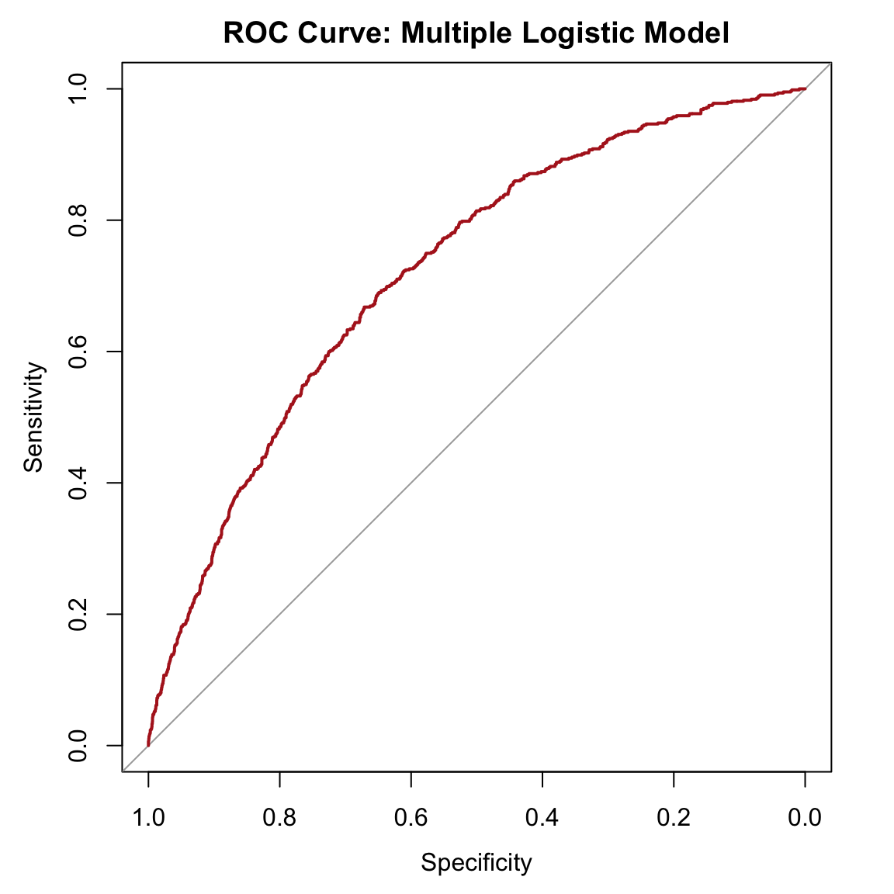
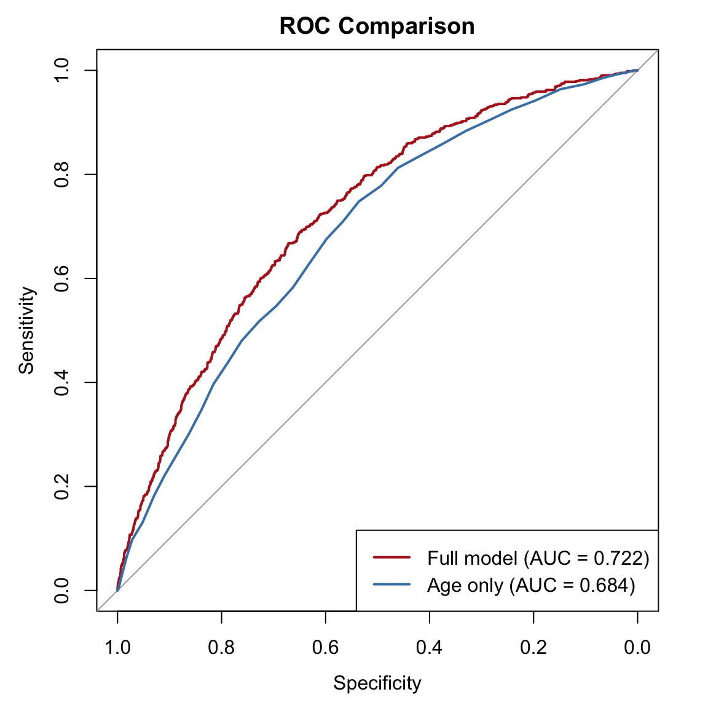

library(tidyverse)
library(this.path)
library(pROC)
setwd(this.dir())
framingham <- read_csv("../../data/framingham.csv") |>
mutate(
male = factor(male, levels = c(0,1), labels = c("Female","Male")),
currentSmoker = factor(currentSmoker, levels = c(0,1), labels = c("Non-smoker","Smoker")),
prevalentHyp = factor(prevalentHyp, levels = c(0,1), labels = c("No","Yes")),
diabetes = factor(diabetes, levels = c(0,1), labels = c("No","Yes")),
TenYearCHD = factor(TenYearCHD, levels = c(0,1), labels = c("No","Yes")),
education = factor(education, levels = 1:4,
labels = c("Some HS","HS Diploma","Some College","College Degree"))
)Day 9: Classification and Predictive Performance
SC INBRE Biostatistics Summer Intensive 2026
1 Overview
Yesterday we fit logistic regression models and learned how to interpret odds ratios. Each model gives us a predicted probability \(\hat\pi_i\) for every participant. Today we ask three questions:
- How do we turn predicted probabilities into yes/no decisions? That requires choosing a threshold.
- How do we evaluate whether those decisions are any good? That requires sensitivity, specificity, and the confusion matrix.
- How do we compare two competing models? That requires ROC curves and AUC.
These tools apply to any model that produces predicted probabilities, not just logistic regression.
We will work through three examples:
- Example 1: From predicted probabilities to classifications, using a simple and a multiple logistic model.
- Example 2: ROC curves and AUC, including a head-to-head model comparison.
- Example 3: Choosing a threshold and the difference between training and honest AUC.
2 Quick Recap: Rebuilding Our Models
We re-fit two models from yesterday to use throughout today’s examples. A simple model (age only) and a multiple model (age, smoking, BP, cholesterol, diabetes).
# Complete cases for the full model
vars_used <- c("TenYearCHD", "age", "currentSmoker", "sysBP",
"totChol", "diabetes")
framingham_cc <- framingham |>
drop_na(all_of(vars_used))
# Simple model: age only
model_simple <- glm(TenYearCHD ~ age,
data = framingham_cc,
family = binomial)
# Multiple model: five predictors
model_full <- glm(TenYearCHD ~ age + currentSmoker + sysBP + totChol + diabetes,
data = framingham_cc,
family = binomial)
# Add predicted probabilities from both models
framingham_cc <- framingham_cc |>
mutate(
p_simple = predict(model_simple, type = "response"),
p_full = predict(model_full, type = "response")
)framingham_cc |>
select(TenYearCHD, p_simple, p_full) |>
summary() TenYearCHD p_simple p_full
No :3555 Min. :0.03833 Min. :0.02216
Yes: 635 1st Qu.:0.07924 1st Qu.:0.07334
Median :0.12854 Median :0.11976
Mean :0.15155 Mean :0.15155
3rd Qu.:0.20180 3rd Qu.:0.19799
Max. :0.42619 Max. :0.80235 Both sets of predicted probabilities range from near 0 to near 0.6. Most values are below 0.2, which makes sense: only about 15% of the cohort develops CHD.
3 Example 1: From Probabilities to Classifications
3.1 Choosing a Threshold
To turn a predicted probability into a yes/no classification, we pick a threshold \(\pi_0\):
\[\hat Y_i = \begin{cases} \text{Yes} & \text{if } \hat\pi_i > \pi_0 \\ \text{No} & \text{if } \hat\pi_i \le \pi_0 \end{cases}\]
The threshold is a choice, not a property of the model. Different thresholds produce different tradeoffs between types of mistakes.
3.2 Confusion Matrix at Threshold = 0.5
framingham_cc <- framingham_cc |>
mutate(pred_50 = factor(if_else(p_full > 0.50, "Yes", "No"),
levels = c("No", "Yes")))
table(Predicted = framingham_cc$pred_50, Actual = framingham_cc$TenYearCHD) Actual
Predicted No Yes
No 3531 605
Yes 24 30At a threshold of 0.5, almost no one gets classified as a predicted CHD case. The model is right about most non-cases but misses nearly all the actual cases. When the event is rare (15%), a 0.5 threshold is almost useless.
3.3 Confusion Matrix at Threshold = 0.15
framingham_cc <- framingham_cc |>
mutate(pred_15 = factor(if_else(p_full > 0.15, "Yes", "No"),
levels = c("No", "Yes")))
table(Predicted = framingham_cc$pred_15, Actual = framingham_cc$TenYearCHD) Actual
Predicted No Yes
No 2380 211
Yes 1175 424Lowering the threshold to 0.15 (roughly the event rate) flags many more people as predicted CHD cases. We now catch more true cases, but we also create more false alarms. This is the fundamental tradeoff.
3.4 Confusion Matrix at Threshold = 0.10
framingham_cc <- framingham_cc |>
mutate(pred_10 = factor(if_else(p_full > 0.10, "Yes", "No"),
levels = c("No", "Yes")))
table(Predicted = framingham_cc$pred_10, Actual = framingham_cc$TenYearCHD) Actual
Predicted No Yes
No 1613 102
Yes 1942 533At 0.10 we cast an even wider net. We catch most true CHD cases, but at the cost of flagging many healthy people.
3.5 Sensitivity, Specificity, PPV, NPV
For a given confusion matrix, four numbers describe performance:
- Sensitivity (true positive rate): of all truly sick, what fraction did we catch?
- Specificity (true negative rate): of all truly healthy, what fraction did we correctly clear?
- PPV (positive predictive value): of everyone we flagged, what fraction were really sick?
- NPV (negative predictive value): of everyone we cleared, what fraction were really healthy?
compute_metrics <- function(pred, actual) {
tab <- table(Predicted = pred, Actual = actual)
TP <- tab["Yes", "Yes"]
FP <- tab["Yes", "No"]
TN <- tab["No", "No"]
FN <- tab["No", "Yes"]
tibble(
Sensitivity = TP / (TP + FN),
Specificity = TN / (TN + FP),
PPV = TP / (TP + FP),
NPV = TN / (TN + FN)
)
}bind_rows(
compute_metrics(framingham_cc$pred_50, framingham_cc$TenYearCHD) |> mutate(Threshold = 0.50),
compute_metrics(framingham_cc$pred_15, framingham_cc$TenYearCHD) |> mutate(Threshold = 0.15),
compute_metrics(framingham_cc$pred_10, framingham_cc$TenYearCHD) |> mutate(Threshold = 0.10)
) |>
select(Threshold, everything()) |>
round(3)# A tibble: 3 × 5
Threshold Sensitivity Specificity PPV NPV
<dbl> <dbl> <dbl> <dbl> <dbl>
1 0.5 0.047 0.993 0.556 0.854
2 0.15 0.668 0.669 0.265 0.919
3 0.1 0.839 0.454 0.215 0.941Reading the table:
- As the threshold decreases, sensitivity goes up and specificity goes down. This is the fundamental tradeoff, and it always runs in this direction.
- PPV is low at every threshold because the event is rare (15%). Even a good model produces many false positives when most of the population is healthy.
- NPV is high at every threshold for the same reason: when most people are healthy, a negative prediction is usually correct.
4 Example 2: ROC Curves and AUC
4.1 What Is an ROC Curve?
The confusion-matrix summary at three thresholds is informative but incomplete. The ROC curve shows sensitivity vs. (1 - specificity) for every possible threshold, sweeping from 0 to 1.
roc_full <- roc(framingham_cc$TenYearCHD, framingham_cc$p_full,
levels = c("No", "Yes"), direction = "<")
plot(roc_full, col = "firebrick", lwd = 2,
main = "ROC Curve: Multiple Logistic Model")
auc(roc_full)Area under the curve: 0.7221The AUC for the full model is about 0.722. This is in the “acceptable” range.
Interpreting the AUC: it is the probability that the model assigns a higher predicted probability to a randomly chosen CHD case than to a randomly chosen non-case. An AUC of 0.72 means the model gets this ranking right about 72% of the time.
| AUC | Discriminative ability |
|---|---|
| \(\approx\) 0.5 | No discrimination (coin flip) |
| 0.6 – 0.7 | Poor |
| 0.7 – 0.8 | Acceptable |
| 0.8 – 0.9 | Excellent |
| > 0.9 | Outstanding |
4.2 Comparing Two Models: Simple vs. Full
Does adding smoking, blood pressure, cholesterol, and diabetes improve the model’s ability to discriminate? We can compare by overlaying their ROC curves.
roc_simple <- roc(framingham_cc$TenYearCHD, framingham_cc$p_simple,
levels = c("No", "Yes"), direction = "<")
plot(roc_full, col = "firebrick", lwd = 2, main = "ROC Comparison")
plot(roc_simple, col = "steelblue", lwd = 2, add = TRUE)
legend("bottomright",
legend = c(paste0("Full model (AUC = ", round(auc(roc_full), 3), ")"),
paste0("Age only (AUC = ", round(auc(roc_simple), 3), ")")),
col = c("firebrick", "steelblue"), lwd = 2)
The full model’s curve lies above the simple model’s curve at most thresholds, confirming that the additional predictors improve discrimination. The AUC improves from 0.684 to 0.722.
4.3 Is the AUC Difference Statistically Significant?
The pROC package can test whether two AUCs from correlated samples are significantly different:
roc.test(roc_simple, roc_full)
DeLong's test for two correlated ROC curves
data: roc_simple and roc_full
Z = -5.848, p-value = 4.975e-09
alternative hypothesis: true difference in AUC is not equal to 0
95 percent confidence interval:
-0.05118426 -0.02548761
sample estimates:
AUC of roc1 AUC of roc2
0.6837724 0.7221084 A small p-value means the full model discriminates significantly better than the simple model. This is the ROC-curve equivalent of comparing nested models.
5 Example 3: Choosing a Threshold and Honest Evaluation
5.1 Youden’s J Statistic
When you have no strong prior about the relative cost of false positives vs. false negatives, Youden’s J statistic provides a reasonable default: it picks the threshold that maximizes sensitivity + specificity - 1.
coords(roc_full, "best", best.method = "youden") threshold specificity sensitivity
1 0.1501818 0.6714487 0.6677165This returns the threshold, along with the sensitivity and specificity at that threshold. It is a balanced choice, but not necessarily the right choice for every application.
5.2 The Threshold Is a Clinical Decision
The “right” threshold depends on the consequences of each type of error:
- For CHD screening: missing a true case (false negative) means the patient does not get preventive treatment. False positives mean unnecessary follow-up tests. Most screening programs set the threshold low (high sensitivity).
- For a costly one-time intervention: the threshold is set higher, so that only people very likely to benefit are treated.
- For equal costs: Youden’s J is a reasonable starting point.
No threshold is “correct” in the abstract. The choice is a clinical decision informed by the statistical tradeoff.
5.3 Training AUC vs. Honest AUC
The AUC we have computed so far uses the same data to fit the model and evaluate it. This is optimistic: the model has already seen these observations, so it looks better than it will on new data.
For an honest estimate, evaluate on data the model has not seen:
- Train/test split: fit on one subset, evaluate AUC on the other.
- Cross-validation: rotate the test set across folds and average the AUCs. We covered this in Day 7.
# Quick demonstration: 70/30 train/test split
set.seed(2026)
n <- nrow(framingham_cc)
train_idx <- sample(seq_len(n), size = round(0.7 * n))
train <- framingham_cc[train_idx, ]
test <- framingham_cc[-train_idx, ]
# Fit on training data
model_train <- glm(TenYearCHD ~ age + currentSmoker + sysBP + totChol + diabetes,
data = train,
family = binomial)
# Predict on test data
test <- test |>
mutate(p_test = predict(model_train, newdata = test, type = "response"))
# AUC on training data
roc_train <- roc(train$TenYearCHD,
predict(model_train, type = "response"),
levels = c("No", "Yes"), direction = "<")
# AUC on test data
roc_test <- roc(test$TenYearCHD, test$p_test,
levels = c("No", "Yes"), direction = "<")
tibble(
Dataset = c("Training", "Test"),
AUC = c(auc(roc_train), auc(roc_test)),
N = c(nrow(train), nrow(test))
) # A tibble: 2 × 3
Dataset AUC N
<chr> <dbl> <int>
1 Training 0.717 2933
2 Test 0.731 1257The test AUC is typically a bit lower than the training AUC. The gap tells you how much the model is over-fitting. If the gap is large, the model may be too complex for the sample size.
Warning
Always report which evaluation scheme was used. A training AUC of 0.75 and a test AUC of 0.70 tell very different stories. Published studies should report the honest (test or cross-validated) AUC.
6 Summary
Three key skills from today:
Classify and evaluate. Choose a threshold, build a confusion matrix, and compute sensitivity, specificity, PPV, and NPV. Understand that the threshold is a clinical decision, not a statistical one.
Build and compare ROC curves. Use
pROC::roc()to build curves,auc()to summarize them, androc.test()to compare two models. The model whose curve lies higher has better discrimination.Get an honest AUC. Always evaluate on held-out data or via cross-validation. Training AUC is optimistic.